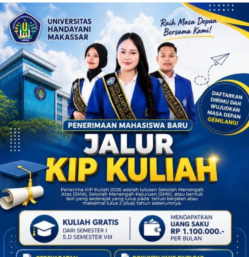
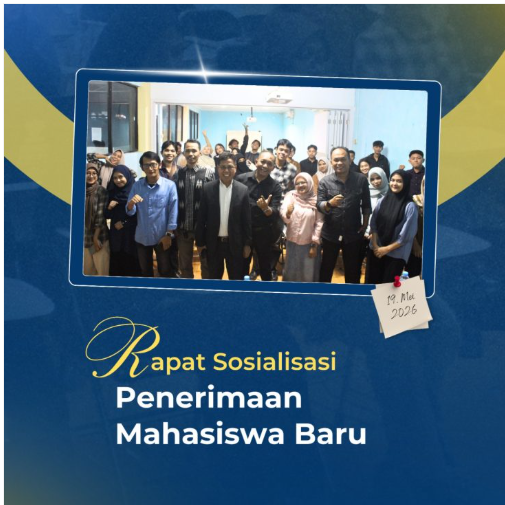
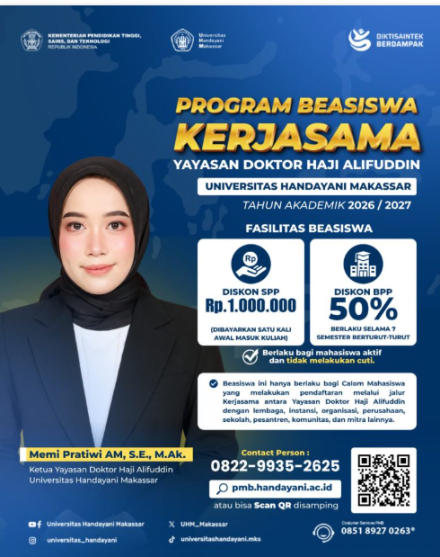
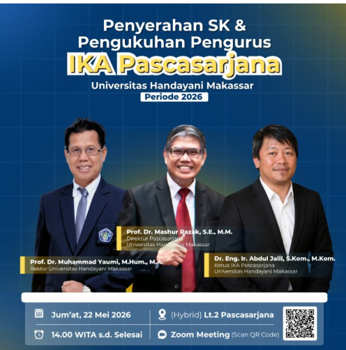

Berita Kampus
Informasi terbaru seputar kegiatan, prestasi, dan perkembangan Universitas Handayani Makassar

Wujudkan Masa Depan Gemilang, Universitas Handayani Makassar Buka Pendaftaran Jalur KIP Kuliah 2026
Universitas Handayani Makassar secara resmi membuka Pendaftaran Mahasiswa Baru (PMB) melalui jalur KIP Kuliah Tahun Akademik 2026. Program ini memberikan kesempatan bagi calon mahasiswa berpotensi akademik untuk memperoleh akses pendidikan tinggi dengan dukungan beasiswa.
Baca Selengkapnya
Rapat Sosialisasi Penerimaan Mahasiswa Baru Universitas Handayani Makassar Tahun 2026
Universitas Handayani Makassar menggelar Rapat Sosialisasi Penerimaan Mahasiswa Baru (PMB) Tahun Akademik 2026/2027 untuk memperkuat koordinasi dan kesiapan proses penerimaan mahasiswa baru.
Baca Selengkapnya
Perluas Akses Pendidikan Tinggi, Universitas Handayani Makassar Luncurkan Program Beasiswa Kerja Sama Tahun Akademik 2026/2027
Universitas Handayani Makassar bersama Yayasan Doktor Haji Alifuddin menghadirkan Program Beasiswa Kerja Sama Tahun Akademik 2026/2027 untuk memberikan kesempatan pendidikan tinggi yang lebih terjangkau.
Baca Selengkapnya
Resmi Dikukuhkan, Pengurus IKA Pascasarjana Universitas Handayani Makassar Periode 2026 Siap Bersinergi
Universitas Handayani Makassar memperkuat jejaring alumni melalui pengukuhan Pengurus IKA Pascasarjana Periode 2026.
Baca Selengkapnya
Perkuat Mutu Institusi, Program Studi Administrasi Publik UHM Resmi Raih Status Terakreditasi
Program Studi Administrasi Publik Universitas Handayani Makassar resmi meraih status terakreditasi sebagai bukti komitmen institusi dalam meningkatkan mutu pendidikan tinggi.
Baca Selengkapnya
Dosen Universitas Handayani Makassar Raih Satyalancana Karya Satya dari LLDIKTI Wilayah IX
Tiga dosen Universitas Handayani Makassar menerima penghargaan Satyalancana Karya Satya sebagai bentuk apresiasi atas dedikasi dan pengabdian di bidang pendidikan tinggi.
Baca Selengkapnya
Tingkatkan Kualitas Publikasi Ilmiah, Universitas Handayani Makassar Gelar Workshop Riset Berbasis AI
Program Pascasarjana Universitas Handayani Makassar mengadakan Workshop Penguatan Riset & Publikasi Ilmiah berbasis Artificial Intelligence (AI) bagi dosen dan mahasiswa.
Baca Selengkapnya